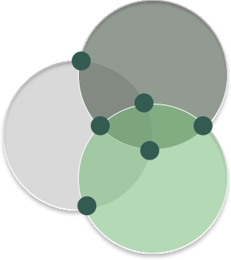

ABOUT THE DESIGN

LANDFORM is a design proposal for Doctor’s Park, developed as a project in studio. The brief imagined a recreational community center for the park, one that works year-round, feels connected to the site, and doesn’t intrude on the forest.
The building is a row of blob-like shapes cut by large circular openings, set mostly underground in a hill. These “punched-out” circles are its most important feature: they link inside and outside, bring in natural light, and guide movement through the building. The idea comes from how wildlife uses a habitat, like a frog on top of or beneath a lily pad, or birds and larger animals using trees in different ways. The building likewise offers several ways to use each space.
The structure comes from full logs taken from the site, not cut into smaller engineered pieces. Moving through the building should feel like wandering through the forest and gradually realizing you’re inside.
ABOUT THE DESIGN-ERS
NATALY SCHOENING AND MACY DIERCKS
Architecture students at the University of Wisconsin-Milwaukee; building project developed in Design VI: Territories, taught by Professor Timmer (SP 2026, 3rd Year Studio).
CONTACT:- SARUP - architecture@uwm.edu
- NATALY - schoen92@uwm.edu
- MACY - mdiercks@uwm.edu